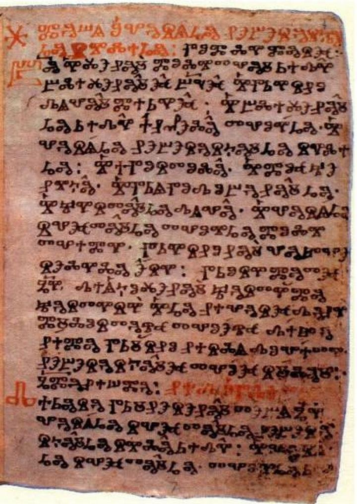

Коли відзначається?
Щороку восени відзначають День української писемності та мови — у пам'ять про святого Нестора Літописця.
Коли й навіщо з'явився День української писемності та мови
Свято започаткували 6 листопада 1997 року. Тодішній президент України Леонід Кучма підтримав ініціативу громадських організацій та видав указ № 1241/97 "Про День української писемності та мови". До 2023 року його відзначали 9 листопада — у день вшанування пам'яті преподобного Нестора Літописця — за юліанським календарем, за яким церква жила донедавна.
Мети свята у документі не прописано. Але щороку в Україні, зокрема в культурних закладах, бібліотеках, в школах та вишах цього дня проводять серії заходів. Свято нагадує про давність української мови, яка є єдиною державною, про історію її абетки, розповідає про розвиток української писемності, та й загалом популяризує українську мову в Україні та за кордоном.
Хто такий Нестор Літописець
Нестор (1056–1114) — монах Києво-Печерської лаври. Вважається, що саме він є автором першої писемної історії українських земель — "Повісті врем'яних літ". ЇЇ створили в XI — на початку XII століття Нестор та інші літописці. Вона починається з порушення проблеми "Звідки пішла Руська земля і хто в ній найперший почав правити". Пам'ятка не збереглася до нашого часу, але існує в Лаврентіївському (1377) та Іпатіївському (Іпатському, друге десятиліття XV століття) списках — коли пам'ятку переписали, на той час це було своєрідне "перевидання" рукописних творів.
Доктор історичних наук Михайло Брайчевський називає Нестора одним з найбільших письменників раннього європейського середньовіччя. А з "Повістю врем'яних літ" пов'язують початок історії української літератури.
Як виникла кирилиця
Писемність слов'янам створили Кирило та Мефодій. До нас не дійшли писемні пам'ятки періоду безпосередньої діяльності Кирила і Мефодія — другої половини IX століття.
У ту епоху князь Ростислав, що очолював Великоморавське князівство (середнє Подунав'я), звернувся до імператора Візантії Михаїла з проханням прислати вчителів, які знають слов'янську мову, щоб його народові переклали Святе Письмо. Візантії було важливо поширити на Захід свій вплив. У 863 році за дорученням імператора брати Кирило і Мефодій вирушили до Моравії. Вони добре знали мову слов'ян. На основі грецького алфавіту, враховуючи фонетичний лад слов'янської мови, Кирило спершу створив глаголицю, а кирилицю розробили вже його учні — найімовірніше, в Східній Болгарії.
Кирилиця пізніше лягла в основу сучасних східнослов'янських, болгарського, сербського, македонського алфавітів, а глаголиця поступово вийшла з ужитку. Тим часом кирилиця поширилася на захід і північний захід, а з XI століття стала основним алфавітом слов'ян.
Найдавніші пам'ятки кирилиці
Найдавнішою з нині відомих датованою пам'яткою кирилиці є напис 931 у скельному монастирі біля с. Крепча в Болгарії. Найдавніші пергаменні кириличні рукописи: Савина книга (Савине Євангеліє) кін. X — поч. XI ст., Супрасльський збірник XI ст. та Енинський апостол XI ст.
Найдавнішою точно датованою кириличною книгою є давньоруське Остромирове Євангеліє 1056–57 років створення. Остромирове Євангеліє писав киянин дяк Григорій на замовлення Остромира — з київського боярського роду. Книга вважається пам'яткою української мови, засвідчує її риси.
Інші українські найдавніші писемні пам'ятки:
- монети князя Володимира 988–1015;
- підпис 1063 року Анни, дочки князя Ярослава Мудрого — королеви Франції;
- Тмутороканський напис (на мармуровій плиті) 1068 року;
- післямови дяка Івана до Ізборників Святослава 1073 та 1076 й власне самі Ізборники;
- графіті Софії Київської.
Джерела вивчення української мови XIV–XV століття — це насамперед ділова документація — грамоти з різних українських територій. А також ораторсько-проповідницька проза, переклади окремих частин Біблії.
Кирилиця міняла свій вигляд впродовж історії. З XIV століття поширився півустав. Це було зумовлено прискоренням писання, адже потреба в книжках збільшувалася. Півуставне письмо лягло в основу кириличних друкарських шрифтів.
А ще потрібно було швидко писати документи, ділові папери — так наприкінці XIV століття виник скоропис. Зі скоропису розвинувся курсив — сучасне ручне письмо, де всі букви пов'язані лініями. В XIV столітті з'явилася й орнаментальна в'язь у заголовках.
Перші друковані видання в Україні
Найдавніша відома друкована книжка українця — трактат Юрія Дрогобича (1483). Перші книги кириличним шрифтом надрукував Швайпольт Фіоль у Кракові (дві з них датовані 1491 роком). Імовірно, замовниками Фіоля були українські культурні діячі. Книги для Білорусі й України видавав білоруський першодрукар Франциск Скорина у Празі (Біблія, 1517–1519) і Вільнюсі (молитовник "Мала подорожна книжка" 1522, Апостол 1525).
Нарешті, Іван Федоров, який до того працював у Москві, видав у Львові перші друковані книжки: "Апостол" (1574) та "Буквар".
Потім же князь Василь-Костянтин Острозький заснував Острозьку друкарню, в якій Федоров продовжував друкувати книжки для освіти.
Зміна дати святкування
День української писемності відзначають 27 жовтня з огляду на перехід Православної церкви України та Української греко-католицької церкви на новоюліанський стиль календаря. ПЦУ перейшла на новоюліанський календар із 1 вересня.